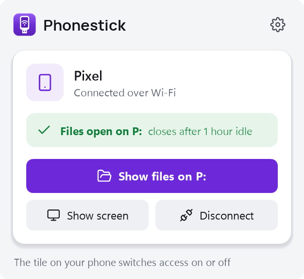
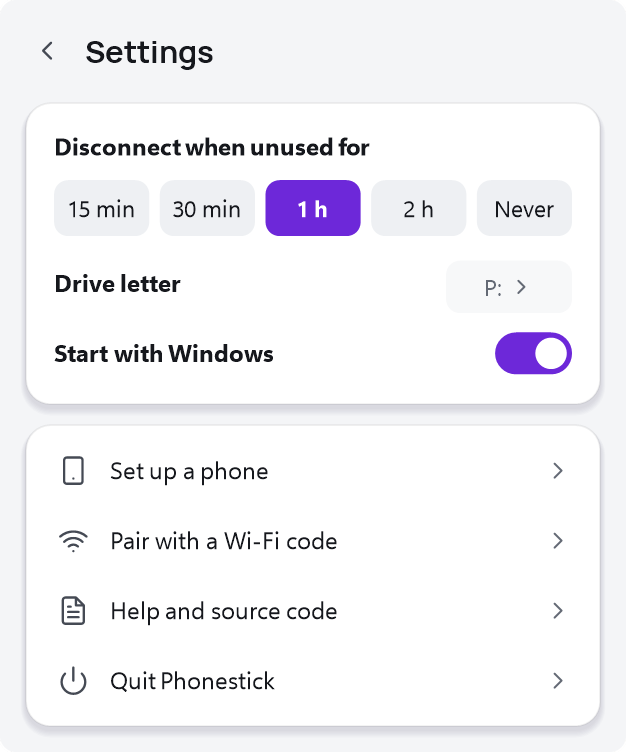
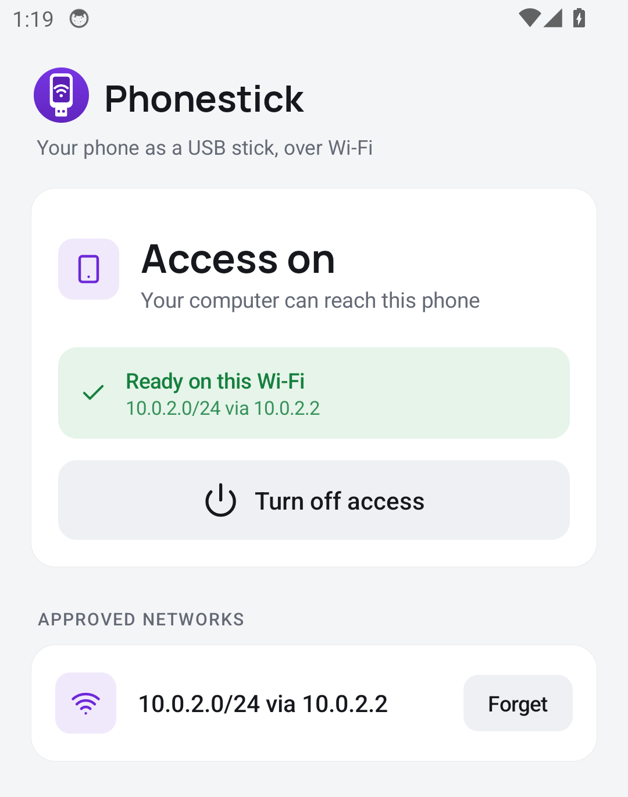
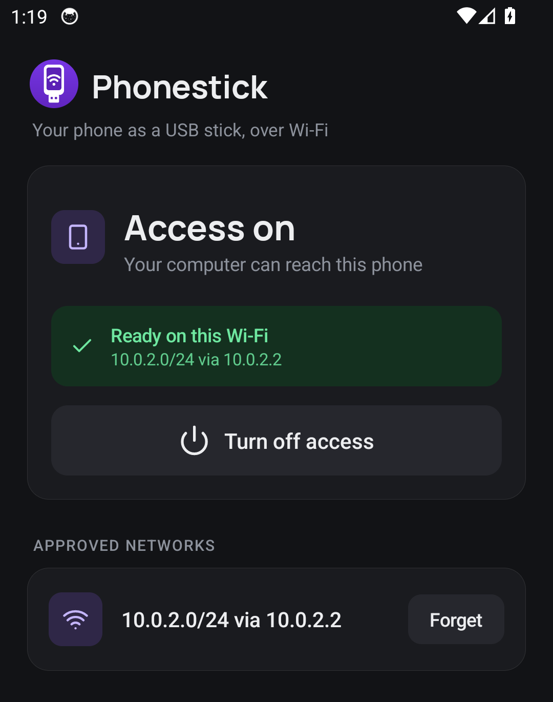

Phonestick puts your Android phone in Windows Explorer as drive P:. No cable, no cloud, no app running in the background. Only your laptop can reach it, and only while the tile is on.
One download on your PC, a few taps on your phone, once. No cable, no account.
Download Phonestick.exe and run it. One file, no installer. It sits in the tray.
Download for WindowsOn first run it fetches the free helpers it builds on (scrcpy, rclone, WinFsp). Windows asks once to allow WinFsp, the driver behind the drive letter.
Windows 10 or 11 · Android 11 or newer · No root
Android already has a secure way for a computer to reach a phone: Wireless debugging. Phonestick makes it effortless, and keeps it locked to you.
The connection is encrypted and needs a key only your paired laptop holds. USB debugging stays locked off, so another computer or a public charging port gets nothing.
One Quick Settings tile. On: your laptop can connect, on the Wi-Fi networks you approved. Off: nothing on the phone is listening.
The phone app is 85 KB, has no internet or location permission and never runs on its own. Android wakes it for a moment when Wi-Fi changes. That's it.
No account, no cloud relay, no server app on the phone. Your files travel straight from the phone to your laptop on your own network.
Turn on Wireless debugging on the phone and type the 6-digit pairing code into Phonestick. Setup installs the phone app and adds its tile. No cable needed.
While the tile is on, the app keeps Wireless debugging available on your home Wi-Fi, through reboots, reconnects and access-point changes.
Click the tray icon, then Open phone files. Your photos, downloads and documents appear in Explorer. It disconnects by itself when you stop using it.
A small panel in the Windows tray and a single screen on the phone. Light and dark, following your system.


Open files, mirror the screen with scrcpy, disconnect. Settings live in the same panel: auto-disconnect after 15 minutes to 2 hours (or never), the drive letter, start with Windows.


Phonestick adds no new server and no new protocol. It uses Android's Wireless debugging, which is encrypted and authenticated, and narrows it down.
Both sides prove who they are with keys exchanged at pairing. A device on the same Wi-Fi can see an open port but cannot connect.
The app keeps USB debugging switched off, so plugging the phone into someone else's computer or a charging kiosk gives no access.
Access comes back by itself only on Wi-Fi networks you approved. In a café or hotel the app stays silent and nothing is exposed.
No internet, no location, no accessibility, no notification access. Its one sensitive permission is granted once from your computer and only switches debugging.
With the tile off, Wireless debugging is off and nothing on the phone listens. On the laptop, the connection closes whenever you disconnect.
Phonestick sees shared storage (photos, downloads, documents, media), like a USB cable would. Other apps' private data stays out of reach.
| Phonestick | USB cable | Cloud sync apps | Wi-Fi file server apps | |
|---|---|---|---|---|
| Shows up as a real drive in Explorer | Yes | Media device, not a drive | No | Usually not |
| No cable | Yes | No | Yes | Yes |
| Files never leave your network | Yes | Yes | No | Yes |
| Nothing running on the phone when idle | Yes | Yes | No | Server keeps running |
| Only your computer can connect | Paired keys | Physically | Your account | Often just a password |
| Screen mirroring and adb included | Yes | Separate setup | No | No |
No. The phone app gets one permission, granted once from your computer over adb, which lets it switch Wireless debugging on and off.
No mobile data: everything stays on your Wi-Fi. The phone app never runs in the background; Android wakes it for a moment when Wi-Fi or a debugging switch changes. With the tile off it does nothing at all.
It is Android's built-in, encrypted and authenticated way for a trusted computer to reach the phone. Only paired computers can connect. Phonestick keeps it limited to your approved networks and locks USB debugging off.
On a typical home Wi-Fi, around 10 MB/s, so a 300 MB video copies in about half a minute. Photos and documents open straight from the drive.
Shared storage: DCIM, Download, Documents, Pictures, Music, Movies and app media folders, the same things a USB cable shows. Other apps' private data stays private.
It is made for your home network. Access only comes back by itself on networks you approved, and the computer has to be on the same network.
Android 11 or newer and Windows 10 or 11 for now. The Windows part is small and open source if you want to port it.
Free, open source, and small enough to read: two little apps, no services, no accounts.